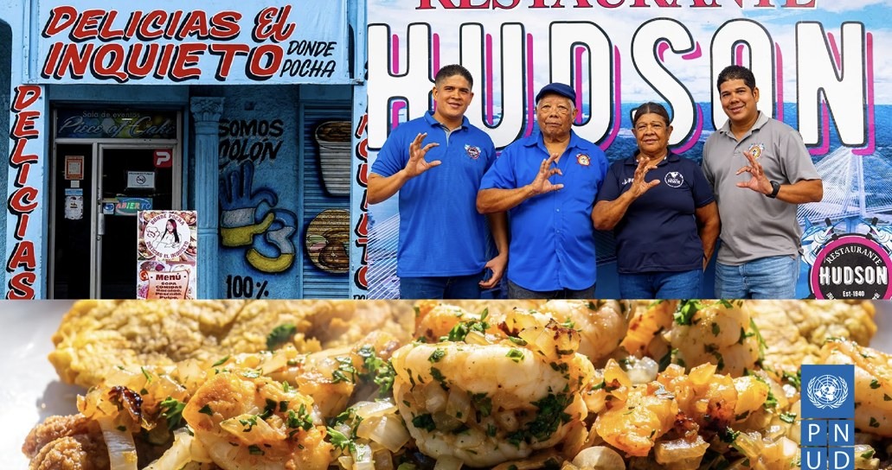
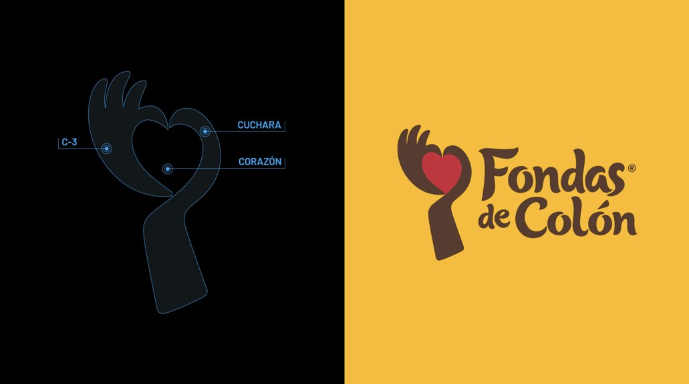
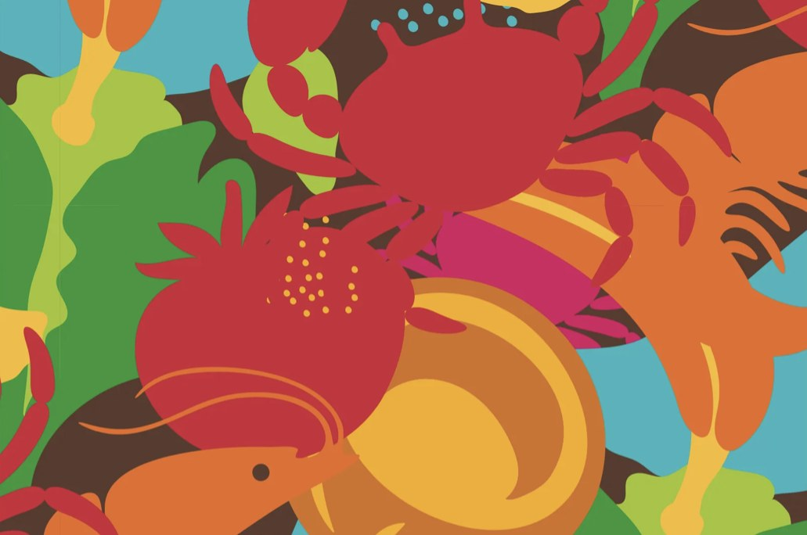
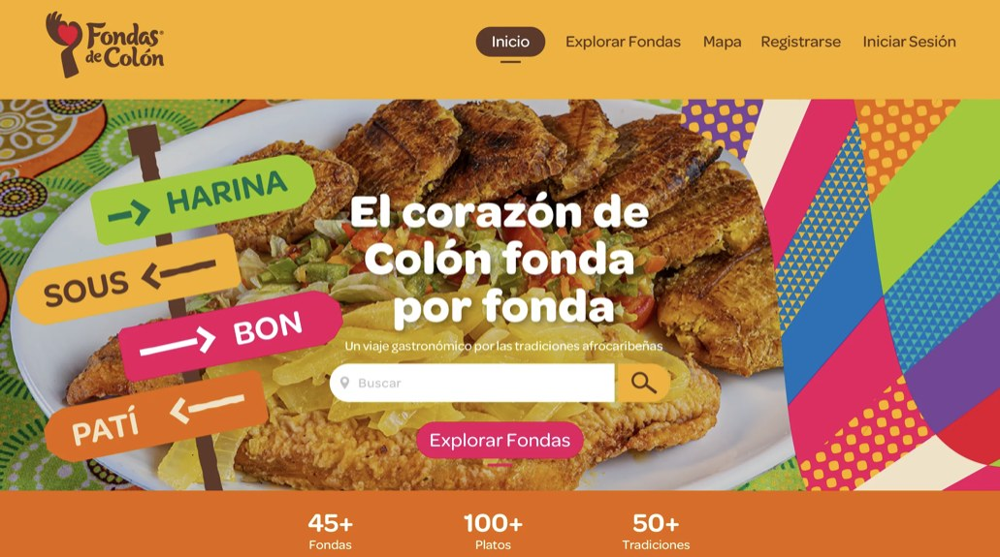
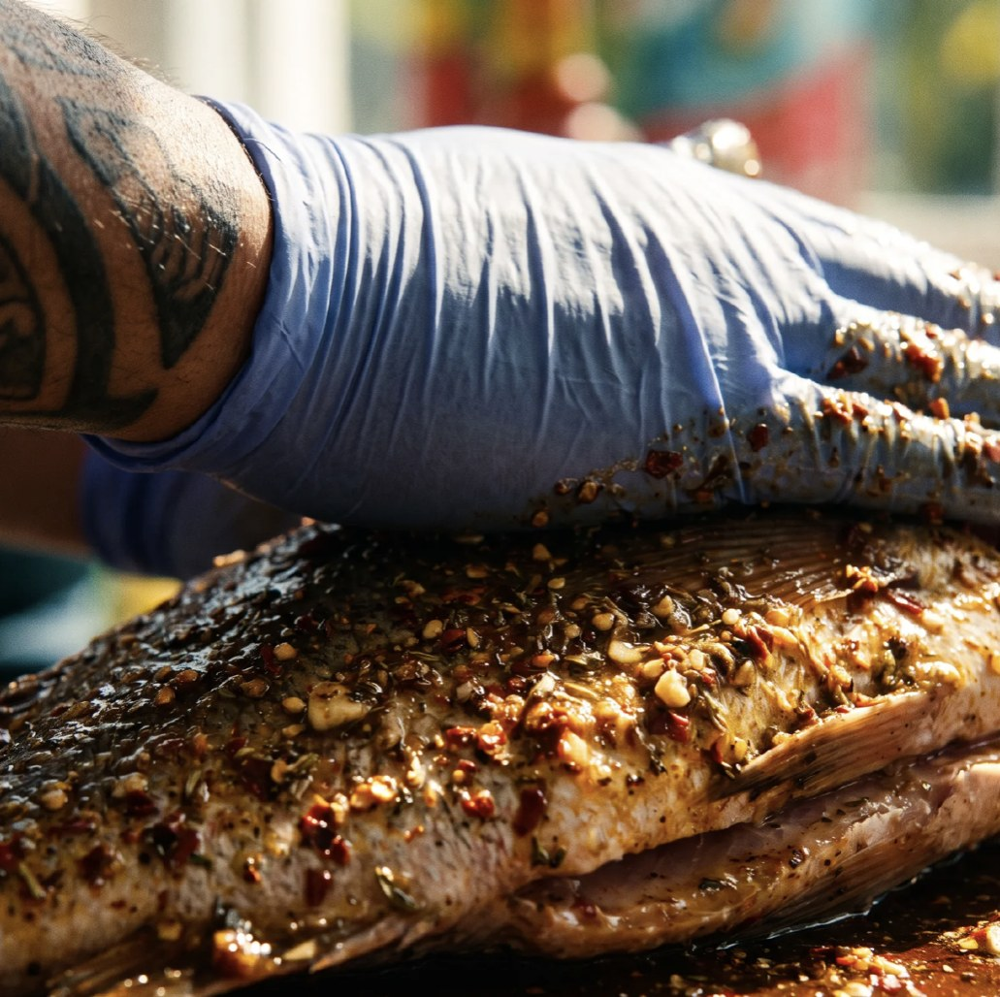
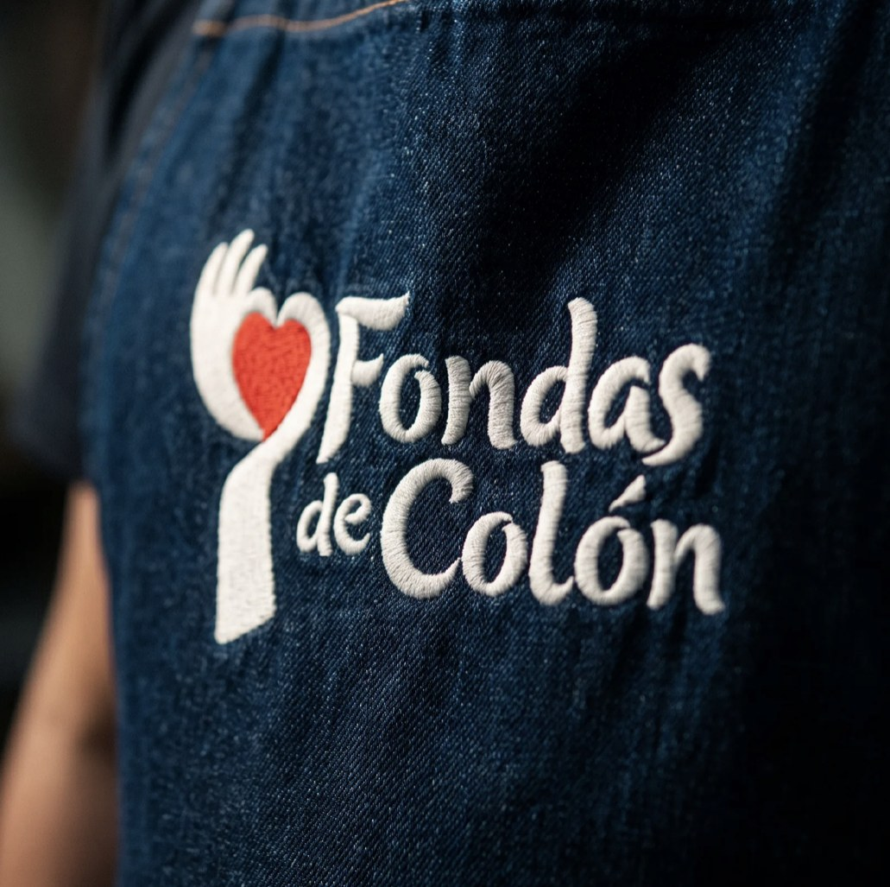
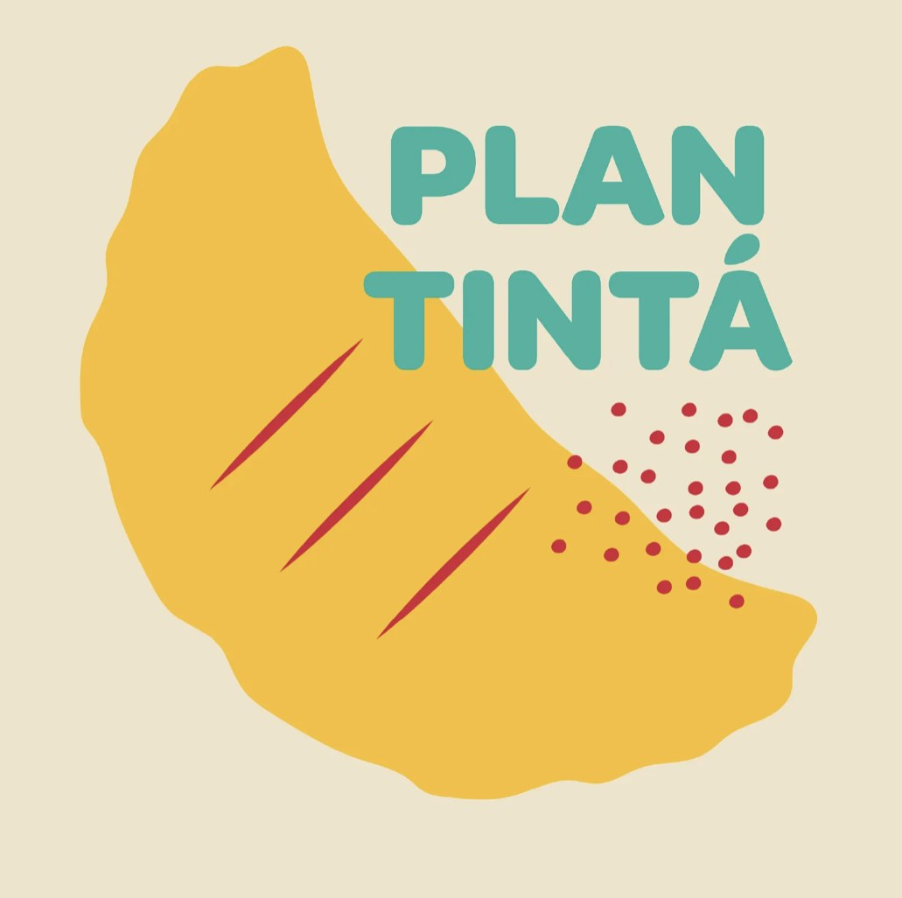
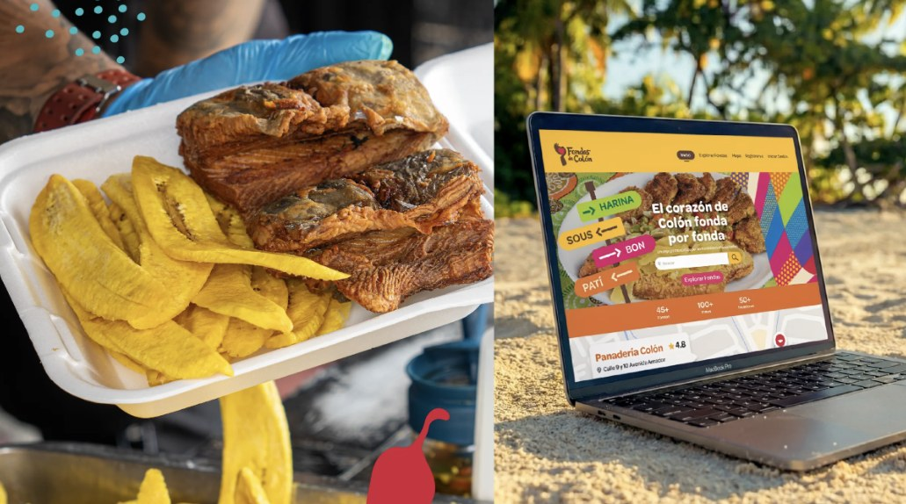

Proyecto — Fondas de Colón
Evolucionando la gastronomía local hacia una vitrina digital global.
Junto al PNUD, transformamos la riqueza gastronómica de Colón en una plataforma interactiva que rescata historias y promueve el desarrollo socioeconómico local.

- Cliente
- Fondas de Colón
- Año
- 2025
- Servicios
- Identidad visual
Diseño web
Colaterales
El reto
Dignificar la cocina popular colonense y llevarla a una vitrina digital sin que pierda su sabor de barrio.
La idea
Creamos un símbolo que fusiona el orgullo territorial (el gesto C-3), la herramienta del trabajo (la cuchara) y la sazón única (el corazón) que define a cada fonda.






Diseñamos con propósito una plataforma que rescata el alma de nuestras fondas tradicionales, celebra siglos de sabor e historia, y convierte sabores locales en experiencias globales.
